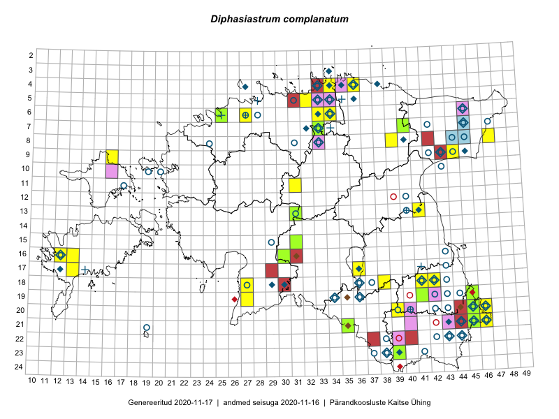

Diphasiastrum complanatum — mets-vareskold
Lycopodiaceae :: Diphasiastrum complanatum (L.) Holub (99); Lycopodium complanatum L. (81); Diphasium complanatum (L.) Rothm. (35)

← Digitaria sanguinalis | tagasi liigiloendi juurde | Diphasiastrum complanatum × Diphasiastrum tristachyum →
Kaart põhineb 224 kirjel:
vaatlusi 106
herbaareksemplare 109
PKÜ kirjeid1 1
ELFi kirjeid2 8
Taime kaasaegsed ja ajaloolised leiukohad asuvad 94 ruudus.
Tingmärgid ja ruutude arvud periooditi (U3 / V4 )
█ 2006–2020 (38/–)
◆/◇ 1971–2005 (32/39)
○ 1921–1970 (51/28)
+ kuni 1920 (8/1)
× hävinud (–/0)
? kaheldav (–/0)
| Ruut | Leidja(d) | Leiuaeg | Kirje |
|---|---|---|---|
| 06-34 | Hermes Sarapuu | 2014-01-01 | ruut/ala: Diphasiastrum complanatum (L.) Holub |
| 06-34 | Margit Hirv, Tiina Neljandik | 2018-08-24 | ruut/ala: Diphasiastrum complanatum (L.) Holub |
| 04-36 | Urmas Kaja | 2019-12-17 | ruut/ala: Diphasiastrum complanatum (L.) Holub |
| 18-42 | Teele Paluots | 2020-04-30 | ruut/ala: Diphasiastrum complanatum (L.) Holub |
| 11-17 | Haide-Ene Rebassoo | 1957–1984 | ruut/ala: Lycopodium complanatum L. |
| 06-45 | Linda Viljasoo, Malle Leht, Tiiu Kull | 1987-08-17 | ruut/ala: Lycopodium complanatum L. |
| 07-45 | 1972-07 | ruut/ala: Lycopodium complanatum L. | |
| 07-45 | Maret Kask, Linda Viljasoo | 1971-08–1972-07 | ruut/ala: Lycopodium complanatum L. |
| 07-45 | Maret Kask | 1960–1962 | ruut/ala: Lycopodium complanatum L. |
| 07-45 | Linda Viljasoo, Liivia Laasimer, Maria Abakumova, Heljo Krall | 1982-07-14 | ruut/ala: Lycopodium complanatum L. |
| 08-44 | Maret Kask | 1961-08-14 | ruut/ala: Lycopodium complanatum L. |
| 09-42 | Erast Parmasto | 1950-06-22–1950-07-01 | ruut/ala: Lycopodium complanatum L. |
| 09-43 | Maret Kask | 1963-06-28 | ruut/ala: Lycopodium complanatum L. |
| 09-43 | Erast Parmasto | 1950-06-22–1950-07-01 | ruut/ala: Lycopodium complanatum L. |
| 09-44 | Õ. Jaagomäe | 1955 | ruut/ala: Lycopodium complanatum L. |
| 07-33 | botaaniline ekspeditsioon ZBI | 1976-07 | ruut/ala: Lycopodium complanatum L. |
| 13-41 | Heljo Krall, Maria Abakumova, Nele Ingerpuu | 1985-06-17 | ruut/ala: Lycopodium complanatum L. |
| 04-34 | 1974–1976 | ruut/ala: Lycopodium complanatum L. | |
| 04-33 | 1974–1977 | ruut/ala: Lycopodium complanatum L. | |
| 04-35 | 1974-07–1975-08 | ruut/ala: Lycopodium complanatum L. | |
| 04-36 | 1974–1977 | ruut/ala: Lycopodium complanatum L. | |
| 04-38 | Tiiu Kull, Kalevi Kull | 1998-08-15 | ruut/ala: Lycopodium complanatum L. |
| 07-32 | E. Adder | 1987 | ruut/ala: Lycopodium complanatum L. |
| 06-34 | J. Eplik, S. Kaaber | 1934–1936 | ruut/ala: Lycopodium complanatum L. |
| 08-40 | Tõnu Ploompuu | 1998 | ruut/ala: Lycopodium complanatum L. |
| 08-40 | M. Leht | 1983-08-16 | ruut/ala: Lycopodium complanatum L. |
| 22-42 | M. Kask | 1956–1957 | ruut/ala: Lycopodium complanatum L. |
| 22-44 | L. Viljasoo | 1977-10 | ruut/ala: Lycopodium complanatum L. |
| 23-38 | J. Paal | 1988-07 | ruut/ala: Lycopodium complanatum L. |
| 23-38 | H. Karu, M. Kask, L. Viljasoo | 1957–1977 | ruut/ala: Lycopodium complanatum L. |
| 23-38 | H. Krall | 1998-07-14–1998-07-16 | ruut/ala: Lycopodium complanatum L. |
| 23-39 | T. Kull | 1996-07-21 | ruut/ala: Lycopodium complanatum L. |
| 23-41 | M. Kask | 1957-08 | ruut/ala: Lycopodium complanatum L. |
| 17-36 | Helle Mäemets | 1986-06–1987 | ruut/ala: Lycopodium complanatum L. |
| 15-29 | E. Tammemägi | 1970–1971 | ruut/ala: Lycopodium complanatum L. |
| 16-12 | Mari Reitalu | 1971–2005 | ruut/ala: Lycopodium complanatum L. |
| 17-12 | M. Reitalu | 1971 | ruut/ala: Lycopodium complanatum L. |
| 18-29 | Heljo Krall, Maria Abakumova | 1982-07-30–1986 | ruut/ala: Lycopodium complanatum L. |
| 18-30 | Heljo Krall, T. Kull, Malle Leht | 1999-07-06 | ruut/ala: Lycopodium complanatum L. |
| 18-41 | Maret Kask, Linda Viljasoo | 1959–1981 | ruut/ala: Lycopodium complanatum L. |
| 18-42 | Maret Kask, Linda Viljasoo | 1978–1979 | ruut/ala: Lycopodium complanatum L. |
| 18-43 | Maret Kask | 1960-06-11 | ruut/ala: Lycopodium complanatum L. |
| 19-42 | L. Enari | 1937-08–1937-09 | ruut/ala: Lycopodium complanatum L. |
| 19-43 | L. Enari | 1937-08–1937-09 | ruut/ala: Lycopodium complanatum L. |
| 19-44 | L. Enari | 1937-08–1937-09 | ruut/ala: Lycopodium complanatum L. |
| 20-45 | 1970-08–1972-05 | ruut/ala: Lycopodium complanatum L. | |
| 20-45 | V. Lasting, Hans Trass | 1950 | ruut/ala: Lycopodium complanatum L. |
| 21-43 | Linda Viljasoo, Maret Kask, A. Frey | 1977-10–1979-08-29 | ruut/ala: Lycopodium complanatum L. |
| 21-44 | Maret Kask | 1957-08-05–1969-06-29 | ruut/ala: Lycopodium complanatum L. |
| 21-44 | Malle Leht, Raivo Leht | 2001-07-23 | ruut/ala: Lycopodium complanatum L. |
| 21-45 | Maret Kask | 1985-07-30 | ruut/ala: Lycopodium complanatum L. |
| 21-46 | Maret Kask | 1956–1970-09-23 | ruut/ala: Lycopodium complanatum L. |
| 21-46 | Linda Viljasoo | 1972 | ruut/ala: Lycopodium complanatum L. |
| 20-45 | V. Lasting, H. Trass | 1950-08 | ruut/ala: Lycopodium complanatum L. |
| 20-45 | M. Kask, H. Karu, L. Viljasoo | 1957–1975 | ruut/ala: Lycopodium complanatum L. |
| 20-45 | T. Kukk, T. Ploompuu | 1992-07-06–1998-05-17 | ruut/ala: Lycopodium complanatum L. |
| 20-43 | M. Kask | 1956–1969-06-25 | ruut/ala: Lycopodium complanatum L. |
| 20-43 | J. Eilart | 1950–1959 | ruut/ala: Lycopodium complanatum L. |
| 09-43 | Ü. Reier | 2001-08-26 | ruut/ala: Lycopodium complanatum L. |
| 06-33 | Rein Kalamees, Kersti Püssa | 2015-06-07 | ruut/ala: Diphasiastrum complanatum (L.) Holub |
| 06-33 | Rein Kalamees, Kersti Püssa | 2015-06-07 | ruut/ala: Diphasiastrum complanatum (L.) Holub |
| 09-44 | Ott Luuk, Hannes Pehlak | 2015-07-24 | ruut/ala: Diphasiastrum complanatum (L.) Holub |
| 19-27 | Meeli Mesipuu, Indrek Tammekänd | 2015-07-14 | ruut/ala: Diphasiastrum complanatum (L.) Holub |
| 19-27 | Meeli Mesipuu, Indrek Tammekänd | 2015-07-14 | ruut/ala: Diphasiastrum complanatum (L.) Holub |
| 07-33 | Jana-Maria Habicht, Ester Valdvee | 2015-05-01 | ruut/ala: Diphasiastrum complanatum (L.) Holub |
| 18-41 | Indrek Tammekänd | 2015-03-28 | ruut/ala: Diphasiastrum complanatum (L.) Holub |
| 07-33 | Jana-Maria Habicht, Ester Valdvee | 2015-05-01 | ruut/ala: Diphasiastrum complanatum (L.) Holub |
| 17-13 | Mari Reitalu, Maarja Nõmm | 2015-11-26 | ruut/ala: Diphasiastrum complanatum (L.) Holub |
| 16-12 | Mari Reitalu, Triin Reitalu | 2015-07-20 | ruut/ala: Diphasiastrum complanatum (L.) Holub |
| 16-12 | Mari Reitalu, Maarja Nõmm | 2015-12-14 | ruut/ala: Diphasiastrum complanatum (L.) Holub |
| 08-39 | Karin Kikas, Elle Rajandu | 2015-06-05–2015-08-14 | ruut/ala: Diphasiastrum complanatum (L.) Holub |
| 08-39 | Elle Rajandu | 2015-08-14 | ruut/ala: Diphasiastrum complanatum (L.) Holub |
| 17-36 | Helle Mäemets, Mare Leis, Malle Timm | 2015-06-25 | ruut/ala: Diphasiastrum complanatum (L.) Holub |
| 20-45 | Kersti Püssa, Rein Kalamees | 2015-07-16 | ruut/ala: Diphasiastrum complanatum (L.) Holub |
| 08-47 | Thea Kull, Peedu Saar | 2014-07-26 | ruut/ala: Diphasiastrum complanatum (L.) Holub |
| 08-47 | Thea Kull, Peedu Saar | 2014-07-26 | ruut/ala: Diphasiastrum complanatum (L.) Holub |
| 08-47 | Thea Kull, Peedu Saar | 2014-07-26 | ruut/ala: Diphasiastrum complanatum (L.) Holub |
| 17-36 | Helle Mäemets, Malle Timm | 2015-07-15 | ruut/ala: Diphasiastrum complanatum (L.) Holub |
| 20-46 | Meeli Mesipuu, Timo Luhamäe | 2016-06-14 | ruut/ala: Diphasiastrum complanatum (L.) Holub |
| 19-45 | Toomas Kukk, Tiit Hallikma | 2016-06-17 | ruut/ala: Diphasiastrum complanatum (L.) Holub |
| 13-41 | Ulvi Selgis | 2016-07-06 | ruut/ala: Diphasiastrum complanatum (L.) Holub |
| 21-35 | Toomas Kukk, Susanna Vain, Raivo Kalle | 2016-07-18 | ruut/ala: Diphasiastrum complanatum (L.) Holub |
| 06-27 | Erkki Otsman, Sergei Smirnov | 2016-07-12 | ruut/ala: Diphasiastrum complanatum (L.) Holub |
| 20-46 | Timo Luhamäe, Meeli Mesipuu | 2016-06-14 | ruut/ala: Diphasiastrum complanatum (L.) Holub |
| 16-13 | Mari Reitalu, Maris Sepp | 2016-05-29 | ruut/ala: Diphasiastrum complanatum (L.) Holub |
| 06-27 | Erkki Otsman, Sergei Smirnov | 2016-07-12 | ruut/ala: Diphasium complanatum (L.) Rothm. |
| 06-27 | Erkki Otsman, Sergei Smirnov | 2016-07-12 | ruut/ala: Diphasium complanatum (L.) Rothm. |
| 11-31 | Toivo Sepp | 2014-07 | ruut/ala: Diphasiastrum complanatum (L.) Holub |
| 04-34 | Liisa Rennel | 2013-03-01–2014-08-31 | ruut/ala: Diphasiastrum complanatum (L.) Holub |
| 20-39 | Ilmar Uibopuu | 2017-07-21 | ruut/ala: Diphasiastrum complanatum (L.) Holub |
| 21-45 | Meeli Mesipuu | 2017-09-01 | ruut/ala: Diphasiastrum complanatum (L.) Holub |
| 20-45 | Meeli Mesipuu | 2017-09-01 | ruut/ala: Diphasiastrum complanatum (L.) Holub |
| 13-41 | Ulvi Selgis | 2017-09-16 | ruut/ala: Diphasiastrum complanatum (L.) Holub |
| 13-41 | Ulvi Selgis | 2017-09-16 | ruut/ala: Diphasiastrum complanatum (L.) Holub |
| 21-46 | Kersti Tambets | 2017-07-10 | ruut/ala: Diphasiastrum complanatum (L.) Holub |
| 18-27 | Indrek Tammekänd | 2018-05-10 | ruut/ala: Diphasiastrum complanatum (L.) Holub |
| 06-34 | Rein Kalamees, Kersti Püssa, Kai Rünk, Illi Tarmu | 2018-10-17 | ruut/ala: Diphasiastrum complanatum (L.) Holub |
| 05-32 | Rein Kalamees | 2018-11-04 | ruut/ala: Diphasiastrum complanatum (L.) Holub |
| 16-13 | Mari Reitalu, Sirje Azarov | 2019-08-15 | ruut/ala: Diphasiastrum complanatum (L.) Holub |
| 16-30 | Peedu Saar, Martin Tikk, Toomas Kukk | 2019-08-28 | ruut/ala: Diphasiastrum complanatum (L.) Holub |
| 16-30 | Peedu Saar, Martin Tikk, Toomas Kukk | 2019-08-28 | ruut/ala: Diphasiastrum complanatum (L.) Holub |
| 23-39 | Peedu Saar, Timo Luhamäe | 2019-07-11 | ruut/ala: Diphasiastrum complanatum (L.) Holub |
| 13-41 | Mare Toom | 2008 | ruut/ala: Diphasiastrum complanatum (L.) Holub |
| 18-38 | Mall Värva | 2010-09-19 | ruut/ala: Diphasiastrum complanatum (L.) Holub |
| 13-41 | Ott Luuk | 2020-04-11 | ruut/ala: Diphasiastrum complanatum (L.) Holub |
| 18-42 | Toomas Kukk | 2011-08-31 | ruut/ala: Diphasiastrum complanatum (L.) Holub |
| 21-44 | L. Pihlapuu | 1954-07-13 | TU256749: Diphasiastrum complanatum (L.) Holub |
| 21-44 | L. Pihlapuu | 1954-08-11 | TU256750: Diphasiastrum complanatum (L.) Holub |
| 20-40 | L. Pihlapuu | 1958-09-03 | TU256751: Diphasiastrum complanatum (L.) Holub |
| 20-40 | L. Pihlapuu | 1963-08-05 | TU256752: Diphasiastrum complanatum (L.) Holub |
| 08-44 | T. Lippmaa | 1932-06-14 | TU256754: Diphasiastrum complanatum (L.) Holub |
| 10-43 | J. Kaasik | 1956-06-15 | TU256757: Diphasiastrum complanatum (L.) Holub |
| 07-33 | J. Lunts | 1933-10-02 | TU256760: Diphasiastrum complanatum (L.) Holub |
| 21-45 | E. Saarson | 1922-08-07 | TU256761: Diphasiastrum complanatum (L.) Holub |
| 18-42 | K. Eichwald | 1954-07-25 | TU256763: Diphasiastrum complanatum (L.) Holub |
| 18-42 | Varblane | 1967-07-20 | TU256764: Diphasiastrum complanatum (L.) Holub |
| 18-42 | I. Mägi | 1960-07-12 | TU256772: Diphasiastrum complanatum (L.) Holub |
| 08-44 | T. Lippmaa, S. Krastin, H. Salasoo, A. Vaga | 1932-06-14 | TU256773: Diphasiastrum complanatum (L.) Holub |
| 05-35 | R. Wiren | 1908-08-09 | TU256775: Diphasiastrum complanatum (L.) Holub |
| 10-19 | E. Lellep | 1960-07-12 | TU256778: Diphasiastrum complanatum (L.) Holub |
| 20-40 | L. Pihlapuu | 1963-08-05 | TU256782: Diphasiastrum complanatum (L.) Holub |
| 20-40 | L. Pihlapuu | 1958-08-09 | TU256783: Diphasiastrum complanatum (L.) Holub |
| 06-34 | H. Freimann | 1923-05-20 | TU256784: Diphasiastrum complanatum (L.) Holub |
| 18-42 | S. Veldre | 1953-06-08 | TU256787: Diphasiastrum complanatum (L.) Holub |
| 06-28 | Albert Üksip | 1946-09-05 | TU256789: Diphasiastrum complanatum (L.) Holub |
| 21-44 | T. Kink | 1972-07-08 | TU256790: Diphasiastrum complanatum (L.) Holub |
| 23-37 | Erast Parmasto, E. Anijalg, L. Kaitsma, Heljo Kurm (Krall) | 1949-09-05 | TU256513: Diphasiastrum complanatum (L.) Holub |
| 08-44 | Hugo Salasoo | 1932-06-14 | TALL C000203: Lycopodium complanatum L. |
| 04-27 | Ruth Aguraiuja | 2001-08 | TALL C000206: Lycopodium complanatum L. |
| 22-44 | Vilma Kuusk, Haide-Ene Rebassoo, Tiiu Nurmiste | 1957-08-05 | TAA0019317: Diphasium complanatum (L.) Rothm. |
| 06-45 | Gustav Vilbaste | 1929-07-11 | TAA0019318: Diphasium complanatum (L.) Rothm. |
| 06-45 | Gustav Vilbaste | 1929-07-11 | TAA0019319: Diphasium complanatum (L.) Rothm. |
| 18-37 | Gustav Vilbaste | 1933-07-27 | TAA0019320: Diphasium complanatum (L.) Rothm. |
| 18-37 | Gustav Vilbaste | 1933-07-27 | TAA0019322: Diphasium complanatum (L.) Rothm. |
| 18-37 | Gustav Vilbaste | 1933-07-27 | TAA0019323: Diphasium complanatum (L.) Rothm. |
| 18-37 | Gustav Vilbaste | 1933-07-13 | TAA0019324: Diphasium complanatum (L.) Rothm. |
| 18-37 | Gustav Vilbaste | 1935-08-01 | TAA0019325: Diphasium complanatum (L.) Rothm. |
| 18-36 | Gustav Vilbaste | 1933-06-21 | TAA0019326: Diphasium complanatum (L.) Rothm. |
| 16-12 | J. Laul | 1936-06-17 | TAA0019327: Diphasium complanatum (L.) Rothm. |
| 10-20 | Gustav Vilbaste | 1931-07-19 | TAA0019334: Diphasium complanatum (L.) Rothm. |
| 06-34 | Gustav Vilbaste | 1932-07-10 | TAA0019335: Diphasium complanatum (L.) Rothm. |
| 04-33 | Gustav Vilbaste | 1932-07-08 | TAA0019336: Diphasium complanatum (L.) Rothm. |
| 05-33 | Gustav Vilbaste | 1932-07-09 | TAA0019337: Diphasium complanatum (L.) Rothm. |
| 07-42 | Alma Saare | 1961-06-27 | TAA0019338: Diphasium complanatum (L.) Rothm. |
| 20-42 | Visolde Puusepp, Liili Siilbek | 1960-06-07 | TAA0019340: Diphasium complanatum (L.) Rothm. |
| 08-24 | Vilma Kuusk, M. Lätt | 1960-08-04 | TAA0019343: Diphasium complanatum (L.) Rothm. |
| 05-36 | Ülo Niinemets | 1989-08-09 | TAA0019344: Diphasium complanatum (L.) Rothm. |
| 19-42 | Maia Hein | 1950-07-08 | TAA0019345: Diphasium complanatum (L.) Rothm. |
| 08-44 | Silvia Talts | 1932-06-14 | TAA0019346: Diphasium complanatum (L.) Rothm. |
| 05-31 | H. Hendrikson | 1935-09-29 | TAA0019350: Diphasium complanatum (L.) Rothm. |
| 23-37 | Oliver Masing | 1949-07-03 | TAA0019351: Diphasium complanatum (L.) Rothm. |
| 21-19 | Agnes Ojaveer | 1962-07-24 | TAA0019354: Diphasium complanatum (L.) Rothm. |
| 07-47 | Agnes Ojaveer | 1961-08-10 | TAA0019359: Diphasium complanatum (L.) Rothm. |
| 19-42 | Salme Kask | 1959-09-06 | TAA0019360: Diphasium complanatum (L.) Rothm. |
| 20-43 | Silvia Talts | 1957-06-21 | TAA0019362: Diphasium complanatum (L.) Rothm. |
| 21-44 | Malle Leht | 2001-07-23 | TAA0019363: Diphasiastrum complanatum (L.) Holub |
| 22-43 | Visolde Puusepp, Helga Tamm | 1957-08-05 | TAA0019364: Diphasium complanatum (L.) Rothm. |
| 20-43 | Silvia Talts | 1957-06-21 | TAA0019365: Diphasium complanatum (L.) Rothm. |
| 08-31 | Silvia Talts | 1958-07-04 | TAA0019366: Diphasium complanatum (L.) Rothm. |
| 20-45 | Toomas Kukk | 1992-08-14 | TAA0019369: Diphasiastrum complanatum (L.) Holub |
| 18-37 | Gustav Vilbaste | 1933-07-27 | TAA0019321: Diphasium complanatum (L.) Rothm. |
| 05-31 | H. Hendrikson | 1935-09-29 | TAA0019349: Diphasium complanatum (L.) Rothm. |
| 20-46 | Gustav Vilbaste | 1930-08-23 | TAA0019439: Diphasium complanatum (L.) Rothm. |
| 09-44 | Hugo Salasoo | 1932-06-13 | TAM0051714: Lycopodium complanatum L. |
| 06-34 | Aino Saaristu | 1942-08-14 | TAM0051718: Lycopodium complanatum L. |
| 06-34 | Aino Saaristu | 1942-08-14 | TAM0051719: Lycopodium complanatum L. |
| 06-28 | Elisabeth Peikel | 1946-08-07 | TAM0051720: Lycopodium complanatum L. |
| 06-28 | Gustav Vilbaste | 1946-08-07 | TAM0051721: Lycopodium complanatum L. |
| 05-34 | Elisabeth Peikel | 1949-05-18 | TAM0051724: Lycopodium complanatum L. |
| 19-45 | Kai Vellak | 2014-05-21 | TU272685: Diphasiastrum complanatum (L.) Holub |
| 19-45 | Kai Vellak | 2014-05-21 | TU272686: Diphasiastrum complanatum (L.) Holub |
| 08-45 | Õie Jaagomäe | 1959-07-22 | TAM0024120: Diphasiastrum complanatum (L.) Holub |
| 08-45 | Õie Jaagomäe | 1959-07-22 | TAM0024121: Diphasiastrum complanatum (L.) Holub |
| 08-45 | Õie Jaagomäe | 1959-07-22 | TAM0024122: Diphasiastrum complanatum (L.) Holub |
| 18-42 | A. Prii | 1955-07-04 | TAM0024126: Diphasiastrum complanatum (L.) Holub |
| 18-42 | A. Prii | 1955-07-04 | TAM0024130: Diphasiastrum complanatum (L.) Holub |
| 07-33 | E. Peikel | 1979-09-03 | TAM0024133: Diphasiastrum complanatum (L.) Holub |
| 07-33 | E. Peikel | 1979-09-03 | TAM0024134: Diphasiastrum complanatum (L.) Holub |
| 21-44 | J.-M. Habicht | 1998-05-27 | TAM0024322: Diphasiastrum complanatum (L.) Holub |
| 21-44 | J.-M. Habicht | 1998-05-27 | TAM0024323: Diphasiastrum complanatum (L.) Holub |
| 07-33 | Jul. Lunts | 1935-09-30 | TAM0066863: Lycopodium complanatum L. |
| 17-41 | K.R. Kupffer | 1891-09 | TAM0069141: Lycopodium complanatum L. |
| 06-25 | E. Niclasen | 1914-08-11 | TAM0077219: Lycopodium complanatum L. |
| 20-45 | Heinrich Aasamaa | 1975-08-28 | TAM0082756: Lycopodium complanatum L. |
| 20-45 | Heinrich Aasamaa | 1975-08-28 | TAM0082799: Lycopodium complanatum L. |
| 08-33 | Alma Kull | 1934-05-03 | TAM0089013: Lycopodium complanatum L. |
| 07-33 | Julius Lunts | 1933-10-02 | TAM0089014: Lycopodium complanatum L. |
| 05-31 | H. Hendrikson | 1935-09-29 | TAA0085002: Lycopodium complanatum L. |
| 05-31 | H. Hendrikson | 1935-09-29 | TAA0085003: Lycopodium complanatum L. |
| 12-40 | Gustav Vilbaste | 1926-08-21 | TAA0019330: Diphasiastrum complanatum (L.) Holub |
| 16-43 | Gustav Vilbaste | 1936-09 | TAA0019332: Diphasiastrum complanatum (L.) Holub |
| 13-40 | Heinrich von Oettingen | 1905-05-22 | TAA0019347: Diphasiastrum complanatum (L.) Holub |
| 13-40 | Heinrich von Oettingen | 1905-05-22 | TAA0019348: Diphasiastrum complanatum (L.) Holub |
| 20-40 | H. Kapp | 1856–1889 | TAA0019402: Diphasiastrum complanatum (L.) Holub |
| 07-34 | G. Pahnsch | 1868-08-02 | TAM0113992: Lycopodium complanatum L. |
| 06-27 | G. Pahnsch | 1878-07-19 | TAM0114044: Lycopodium complanatum L. |
| 06-27 | G. Pahnsch | 1878-06-29 | TAM0114045: Lycopodium complanatum L. |
| 20-40 | Maximowitsch | TAM0114046: Lycopodium complanatum L. | |
| 06-27 | Gerhard Pahnsch | 1879-07-14 | TAM0114051: Lycopodium complanatum L. |
| 06-27 | G. Pahnsch | 1876-07-10 | TAM0114053: Lycopodium complanatum L. |
| 07-33 | Jana-Maria Habicht | 2015-05-01 | TAM0117188: Diphasiastrum complanatum (L.) Holub |
| 08-44 | Silvia Talts, Johannes Talts | 1932-06-14 | TAA0115843: Lycopodium complanatum L. |
| 06-28 | Jaak Ruubel | 1931-05-17 | TAM0129507: Lycopodium complanatum L. |
| 06-25 | Sander Laherand | 2016-08-16 | TAA0135916: Diphasiastrum complanatum (L.) Holub |
| 19-45 | Toomas Kukk, Tiit Hallikma | 2016-06-17 | TAA0135969: Diphasiastrum complanatum (L.) Holub |
| 05-28 | Paul Wasmuth | 1912-07-30 | TAM0132389: Lycopodium complanatum L. |
| 21-35 | Toomas Kukk, Susanna Vain, Raivo Kalle | 2016-07-18 | TAA0139469: Diphasiastrum complanatum (L.) Holub |
| 07-40 | Kai Vellak | 2017-07-12 | TU284251: Diphasiastrum complanatum (L.) Holub |
| 07-40 | Kai Vellak | 2017-07-12 | TU284252: Diphasiastrum complanatum (L.) Holub |
| 19-41 | Mare Leis | 2015-05-22 | TAA0118825: Diphasiastrum complanatum (L.) Holub |
| 13-31 | Indrek Tammekänd, Karl Adami | 2018-10-05 | TAA0147637: Diphasiastrum complanatum (L.) Holub |
| 23-39 | Timo Luhamäe, Peedu Saar | 2019-07-11 | TAA0149932: Diphasiastrum complanatum (L.) Holub |
| 16-30 | Toomas Kukk, Peedu Saar, Martin Tikk | 2019-08-28 | TAA0148608: Diphasiastrum complanatum (L.) Holub |
| 15-31 | Indrek Tammekänd | 2019-07-27 | TAA0151916: Diphasiastrum complanatum (L.) Holub |
| 13-31 | Vilma Kuusk | 1966-06-20 | TAA0019353: Diphasium complanatum (L.) Rothm. |
| 20-44 | Airi Varik, Külli Samuel | 1994-08-18 | ELF: 5475 |
| 19-35 | Tiiu Kull, Kalevi Kull | 1995-09-12 | ELF: 5489 |
| 19-35 | Tiiu Kull, Kalevi Kull | 1995-09-12 | ELF: 5489 |
| 19-34 | Tiiu Kull, Kalevi Kull | 1995-09-30 | ELF: 7474 |
| 23-39 | Sanna-Kaisa Juvonen, Ülle Sillasoo, Olev Merivee | 1994-05-25 | ELF: 7823 |
| 07-45 | Alar Soppe | 2009-09-11 | ELF: 13532 |
| 08-44 | Elle Rajandu | 2014-08-07 | ELF: 24327 |
| 08-45 | Jaanus Paal | 2014-07-05 | ELF: 24429 |
| 15-18 | 2002-08-26 | PKÜ: 10599 |
Pärandkoosluste Kaitse Ühingu (PKÜ) andmebaas sisaldab inventeeritud koosluste kirjeldusi ja liigiloendeid. Kõige enam on andmeid niidutaimede kohta.↩︎
Eestimaa Looduse Fondi (ELF) andmebaas sisaldab inventeeritud koosluste kirjeldusi ja liigiloendeid. Eriti rohkesti on andmeid märgalade kohta.↩︎
Ruutude arv uue atlase andmekogu järgi. Muuhulgas arvestab vanemat herbaariumi, 2005. aasta atlase välitöölehtedelt uuesti digitaliseeritud andmeid jne. Uue atlase andmekogust pärinevad andmed on kaardile kantud siniste sümbolitega.↩︎
Ruutude arv 2005. aasta atlase (Kukk, T., Kull, T., Eesti taimede levikuatlas. Eesti Maaülikool, Põllumajandus- ja Keskkonnainstituut, Tartu, 2005) järgi. Andmeallikana on kasutatud levik.exe programmi, kus igas ruudus on registreeritud vaid uusim leid. Seetõttu on vanemate perioodide kohta andmed puudulikud. Kasutatud levik.exe andmestikus leidub mõningaid kõrvalekaldeid atlase trükis ilmunud versioonist, sagedamini tarnade ja käpaliste seas. Lisaks leidub selles andmestikus valik liike (peamiselt väheste leidudega tulnuktaimed), mille kaarte trükis ei avaldatud. Vana atlase andmed ruutudest, milles ei ole uue atlase andmekogus leide enne 2006. aastat, on kaardil esitatud punaste sümbolitega. Vana atlase andmetel hävinud ja kaheldavaid leiukohti pole hilisemate (taas)leidude põhjal korrigeeritud.↩︎